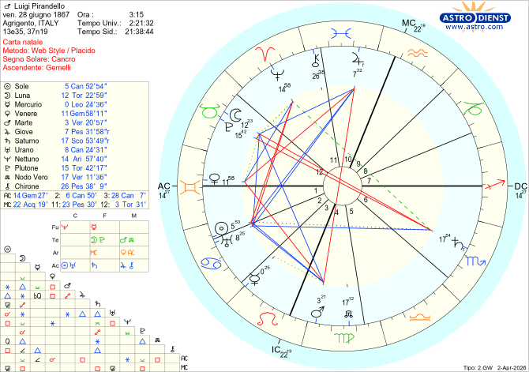

Biografie
Luigi Pirandello
Agrigento, 28 giugno 1867
Luigi Pirandello nato ad Agrigento il 28/06/1867 alle ore 03:15
Cancro Asc Gemelli

Le maschere non mentono:
Pirandello e i segreti del suo tema natale
Luigi Pirandello nasce nel 1867 ad Agrigento ed è uno degli scrittori e drammaturghi più famosi di tutti i tempi. La sua originalità tematica e la sua capacità di rinnovare il linguaggio teatrale gli valsero, nel 1934, il Premio Nobel per la Letteratura.
L'epoca in cui visse è segnata da una profonda crisi delle certezze. Il positivismo comincia a vacillare: ci si rende conto che la scienza non è in grado di spiegare tutto e che ogni teoria può essere confutata da una nuova scoperta. Anche il Risorgimento, che aveva alimentato grandi speranze di riforma sociale, si rivela deludente. La nascita del Regno d'Italia nel 1861, anziché migliorare la vita del popolo, ne peggiora le condizioni, specialmente al Sud.
In questo clima di transizione e disillusione, muoiono gli ideali di uguaglianza e l'individuo si lascia vivere, rassegnato e confuso. È in questo contesto che si inserisce la voce di Pirandello: una voce che non si limita a denunciare una situazione sociale, ma scende in profondità nell'animo umano, portando alla luce temi come l'identità, la percezione individuale e il conflitto tra apparenza e verità. Prima di lui, nessuno aveva fatto questo con tale intensità. Per questo le sue opere vengono considerate originali e innovative, e ancora oggi risuonano nella cultura mondiale.
Osservando il tema natale di Pirandello, emerge subito un elemento di grande rilievo: il Sole è congiunto a Urano tra la prima e la seconda casa, nel segno del Cancro. Urano simboleggia originalità e innovazione. Collocato in seconda casa, indica che sono proprio queste qualità ad avergli conferito visibilità e successo. A rafforzare questo quadro, il trigono di Giove in decima casa — quella del successo e della realizzazione — aggiunge potenza e risonanza pubblica. Il Cancro, segno tradizionale per eccellenza dello zodiaco, diventa così il terreno in cui Urano pianta il seme dell'innovazione nella tradizione.
Che Pirandello fosse destinato alla scrittura lo si legge chiaramente nel suo tema natale. Venere, governatrice della Bilancia che si trova in quinta casa — quella della creatività — è congiunta all'ascendente Gemelli, segno per eccellenza della scrittura, del teatro e della comunicazione. Mercurio, pianeta della scrittura e della parola, si trova nella terza casa, che è la sua casa cosignificante, ed è anche governatore dell'ascendente. In più, è isolato: una configurazione che tende ad amplificarne la forza e a renderlo protagonista assoluto della vita della persona. Si trova nel segno del Leone, che tra i suoi significati porta il successo e lo spettacolo. Come a dire: il successo nasce dalla scrittura e dal teatro.
Il tema va però ancora oltre. Il segno del Cancro, che simboleggia la narrativa e i romanzi, ospita la congiunzione Sole-Urano, in trigono a Giove in Pesci e decima casa. Si riallaccia così alla realizzazione professionale, alla parola e al guadagno, arricchiti dalla fantasia e dalla creatività tipiche del segno dei Pesci. La Luna in dodicesima casa esprime al massimo le sue qualità di intuito, immaginazione e fantasia, e forma un sestile con Giove in decima casa e con Urano in seconda, a conferma che queste doti sono una fonte concreta di realizzazione e guadagno.
Con valori mercuriali così potenti, sostenuti da una Luna forte e da segni emotivi e creativi, cos'altro avrebbe potuto fare quest'uomo se non scrivere per il teatro, romanzi e novelle?
Per Pirandello la scrittura non è soltanto un lavoro: è anche un modo per fuggire dalla realtà, dalle convenzioni e dai formalismi che la società impone. Venere — il piacere, il desiderio — è congiunta all'ascendente e forma un sestile con Nettuno in Ariete, che si traduce letteralmente nel piacere della fuga. Nettuno si trova in undicesima casa, la più anticonvenzionale e antipatriarcale dello zodiaco, opposta alla quinta, che è invece la casa delle certezze. Per il pensiero patriarcale, ogni cosa deve essere o bianca o nera, senza ambiguità. I personaggi di Pirandello, al contrario, sono contraddittori: indossano una maschera per interpretare il ruolo che la società ha loro attribuito, ma in realtà non sanno chi sono né come vengono percepiti dagli altri. Hanno un'identità frammentata e faticano a cogliere con chiarezza la realtà che li circonda.
Il tema natale mette in evidenza questo aspetto in modo particolarmente eloquente attraverso la congiunzione Luna-Plutone in dodicesima casa, in opposizione a Saturno in sesta. L'asse sesta-dodicesima descrive il conflitto tra l'anticonformismo della dodicesima casa e l'omologazione richiesta dalla sesta. Plutone, che rappresenta la maschera, unito alla Luna, simbolo dei sentimenti più profondi e autentici, ci avverte che questi ultimi devono rimanere nascosti. Se emergono troppo apertamente, il rischio è di essere rifiutati dalla società o emarginati, come suggerisce l'opposizione a Saturno in sesta casa. E tutto questo avviene tra il segno del Toro — ciò che si vede — e quello dello Scorpione — ciò che si nasconde. Una polarità perfetta per descrivere il mondo pirandelliano.
Questo aspetto astrologico non parla soltanto del pensiero letterario di Pirandello, ma anche di una realtà concreta e dolorosa che egli dovette affrontare: la malattia mentale della moglie. La Luna congiunta a Plutone in dodicesima casa indica una figura femminile autodistruttiva e distruttiva. L'opposizione di Saturno dalla sesta casa rende i ragionamenti contorti, incomprensibili e corrosivi, come vuole lo Scorpione, segno in cui Saturno riceve la lesione. La dodicesima casa, del resto, è la casa dei manicomi, degli emarginati, dei comportamenti fuori dalla norma.
Antonietta — questo il nome della moglie — cominciò a mostrare i primi segni di squilibrio già pochi anni dopo il matrimonio. L'esordio conclamato della malattia avvenne nel 1903, in coincidenza con l'allagamento della miniera in cui il padre di Pirandello aveva investito l'intera dote della donna. Lo scrittore si rifiutò di farla internare in manicomio, nonostante il parere degli psichiatri dell'epoca.
Quando nella vita di una persona accadono eventi che la stravolgono, il tema natale tende a segnalarlo con chiarezza. Nel caso di Pirandello, questo è evidenziato dall'opposizione tra Marte in Vergine e quarta casa e Giove in Pesci e decima casa. Marte simboleggia gli incidenti; la Vergine è legata al lavoro; la quarta casa rappresenta il padre e la famiglia di origine. Giove, invece, simboleggia il denaro. L'asse quarta-decima descrive il conflitto tra il desiderio di protezione familiare e la spinta verso l'autonomia. Dopo la tragedia, Pirandello si trovò a dover provvedere economicamente da solo alla propria famiglia. Fino ad allora era stato il padre a garantirgli un reddito mensile attraverso i proventi della miniera.
La congiunzione Sole-Urano tra prima e seconda casa, al sestile di Marte in Vergine e quarta casa, racconta con precisione questa svolta: spinto dalla necessità, Pirandello si gettò a capofitto nel lavoro, lasciandoci un'abbondante produzione letteraria di inestimabile valore.
La vita di Luigi Pirandello è la storia di un uomo che trasformò ogni dolore in arte. La malattia della moglie, la rovina economica, il senso di smarrimento della sua epoca: tutto questo, invece di spezzarlo, alimentò una produzione letteraria straordinaria, capace di toccare le corde più intime dell'animo umano.
Il tema natale sembra confermare ciò che la storia ci ha già consegnato: Pirandello era nato per scrivere, per indagare le contraddizioni dell'esistenza, per smascherare le finzioni che gli esseri umani costruiscono attorno a sé. Le sue opere non invecchiano perché parlano di qualcosa di universale e senza tempo: la difficoltà di sapere chi siamo davvero, al di là delle maschere che il mondo ci chiede di indossare.
In fondo, come scrisse egli stesso, ognuno di noi crede di essere uno, ma non è vero: siamo tanti. E forse è proprio questa verità scomoda, il suo lascito più grande all'umanità.